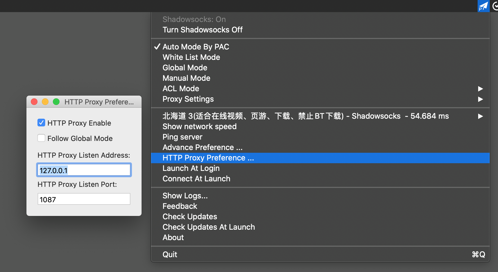
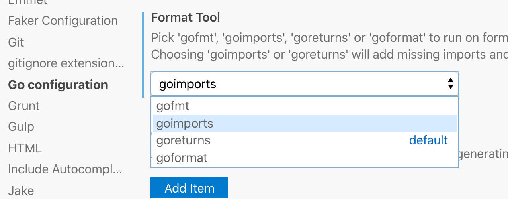
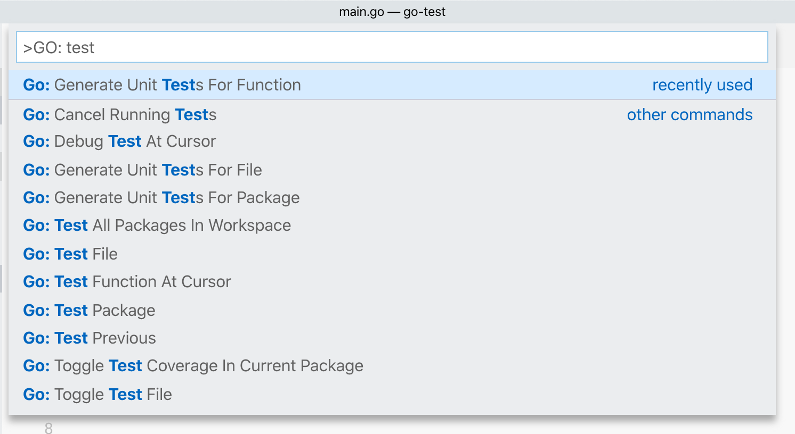
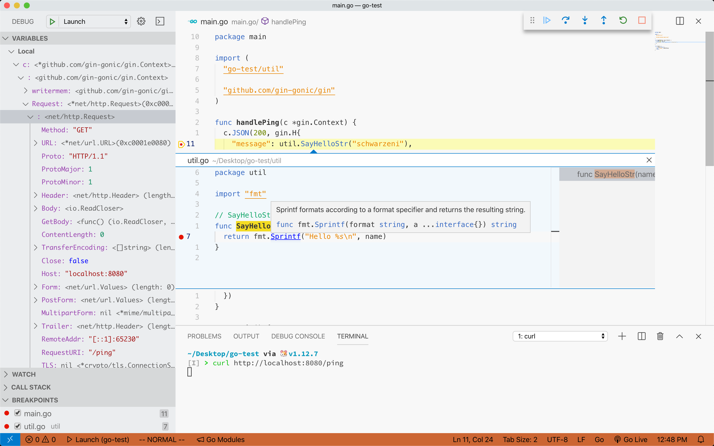
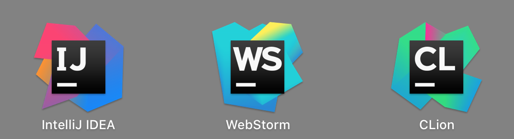
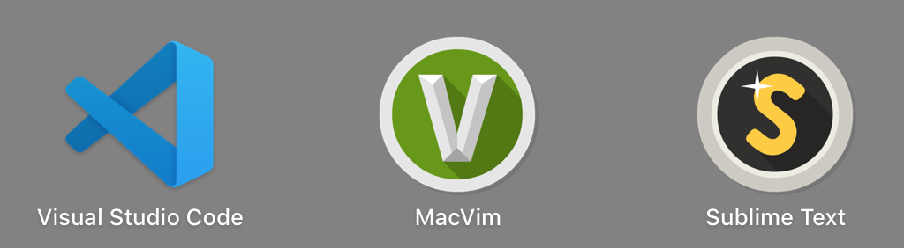

本文不是教程，仅仅是搭建环境过程中的几个注意事项
几个有用的官方文档链接
全为官方的链接，因为这些是最靠谱的，其他的第三方教程都是垃圾
- microsoft/vscode-go README.md
- microsoft/vscode-go wiki
- Go tools that the Go extension depends on
- Go modules support in Visual Studio Code
- Debugging Go code using VS Code
- User and Workspace Settings
配置tool安装的GOPATH
vscode的Golang插件需要依赖一大堆golang的库，如果希望将这些库和别的库分开，可以在vscode的配置文件中配置 go.toolsGopath 参数，指定一个特殊的 GOPATH 。官网文档原话如下：
“If you wish to have the extension use a separate GOPATH for its tools, provide the desired location in the setting
go.toolsGopath. “
也许某些 go tool 会因为网站被墙的原因无法直接用 go get 下载，如果设置了上面的选择，你就可以通过某些方式搞到它的可执行文件放到那个 GOPATH 下的bin文件夹中，大部分依赖可以在上面的第三个链接：Go tools that the Go extension depends on 中查看
翻墙问题
首先，你需要有一个 http proxy 代理，如果你使用的是 ShadowSock 的话可以方便地配置，这里就举一下我本地环境的例子吧，代理为 http://127.0.0.1:1087

然后，你就可以在vscode的配置文件中配置参数 http.proxy 为 http://127.0.0.1:1087 同时配置参数 http.proxyStrictSSL 为 false ，这样让go插件自动下载依赖就不会有问题了。
关于vscode代理的配置请参考上面给出的最后一个链接：User and Workspace Settings ，可能内容有些多，请用浏览器搜索 http.proxy 进行快速定位
使用go mod
根据上面的第四个链接： Go modules support in Visual Studio Code ，需要在vscode配置文件中配置参数 go.useLanguageServer 为 true ，关于 languageserver 的详细配置请移步至 vscode-go 在 Github 上的 README.md 。
注意，当前使用这个插件默认使用的 language server 为 gopls (v0.1.7) 无法做到对未导入包的自动补全，其它问题详见它的 known-issues
必须功能
目前来说一下几点功能是我比较关注的：
开箱即用
非常不好，必须安装一大堆 Golang 的库…
重构
在同一个 package 下支持的比较好，但是不同的 package 就没有支持了…
代码补全
对于 go mod 的支持不是很好…
格式化
可以在vscode图形化设置界面中进行配置，也可以直接在它的配置文件中配置参数 go.formatTool

debug
详见官方wiki：Debugging Go code using VS Code ，需要安装 dlv
快速生成测试代码
由于 gotest 的存在，可以使用插件快速生成测试文件，调用形式如下

个人对 vscode 编写 Golang 代码的看法
小的demo、调研用的代码可以用它来写写，其他的情况就别折腾 vscode 了，它只是一个高级一点的文本编辑器呀，还是用 Intellij IDEA 或者 Goland 吧

曾经用 vim 的时候折腾过 YouCompleteMe ，之后倒腾过 Sublime 以及 Atom ，现在老了折腾不动了，还是 Jetbrain 全家桶真香，学生还可以免费用，其他的那些代码编辑器还是给我老老实实地当代码编辑器吧

